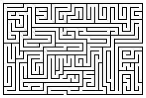

Read the lessons at the Vanderbilt Library website: http://divinity.lib.vanderbilt.edu/lectionary/cAdvent/cAdvent1.htm
Read
the lessons at the Vanderbilt Library website:
http://divinity.lib.vanderbilt.edu/lectionary/cAdvent/cAdvent1.htm
Sermon Summary
|
Listen to the lessons for the following words, and tick them off when you hear them: |
___ "I will fulfill the promise I
made " |
|
Is today's Sermon based on one of the Lessons? |
Yes / No |
|
Circle the Lesson that the Sermon is based on. |
Jeremiah
33:14-16 None of the Above |
|
What is the main point of the Sermon? |
_______________________________ |
|
Write down one Scripture reference that the preacher makes |
_______________________________ |
|
Write down one figure of speech used by the preacher (Metaphors, Similes, hyperbole) |
_______________________________ |
|
Write down four interesting words and discuss them with an adult during coffee hour |
_______________
|
|
|
G T A H T B G S W
|
STRENGTH PRAYING THINGS ESCAPE BEFORE TIMES THESE STAND PLACE ALERT WILL THAT TAKE NRSV LUKE HAVE YOU SON MAY MAN ALL TO |
|
(Luke 21:36) Be alert at all times, praying that you may have the strength to escape all these things that will take place, and to stand before the Son of Man." (NRSV) |
Middle-School Pew-work ...Page 2
|
25 And there shall be signs in the
sun, and in the moon, and in the stars; and upon the earth
distress of nations, with perplexity; the sea and the waves
roaring; |
redemption draweth nigh. |
pass away. |
Why do we think "signs" in the sky would be expected by Jesus' hearers?
_____________________________________________________________________________
What other times was a star in the sky a "sign?"
_____________________________________________________________________________
What is the sign Jesus points out in verses 29-30?
_____________________________________________________________________________
What does it mean to speak of the "Kingdom of God"?
_____________________________________________________________________________
What things help us stay "alert" and not bogged down in discouragement?
______________________________________________________________________________
